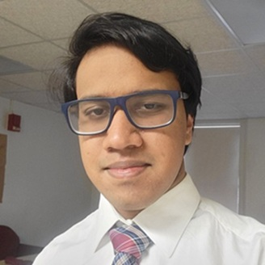

About Me!

Photograph by Kalana Amarasekara, 2026. Resized from original
Hello! My name's Kalana Amarasekara, and I'm originally from Sri Lanka. I'm a junior English major and public policy minor taking the PWTC certificate here at the University of Massachusetts Amherst. As with most people, I decided to take the PWTC certificate because it had the best future job prospects, but I have also come to genuinely enjoy taking it.
I have learned to create easily accessible digital material that all audiences can use. When I'm not coding or presenting information, I write for the Massachusetts Daily Collegian, where I have served as an Assistant Arts Editor for almost two years, and I am also an intern in the Editorial, Design and Production department of the University of Massachusetts Press, the University's publishing house.
My interests as a writer include:
- Journalism
- Professional writing
- User experience
- Technical documentation
- Policy writing
In my spare time, I also enjoy watching shows including Top Gear and cat videos on YouTube, doomscrolling, reading, tasting coffee and going for walks.